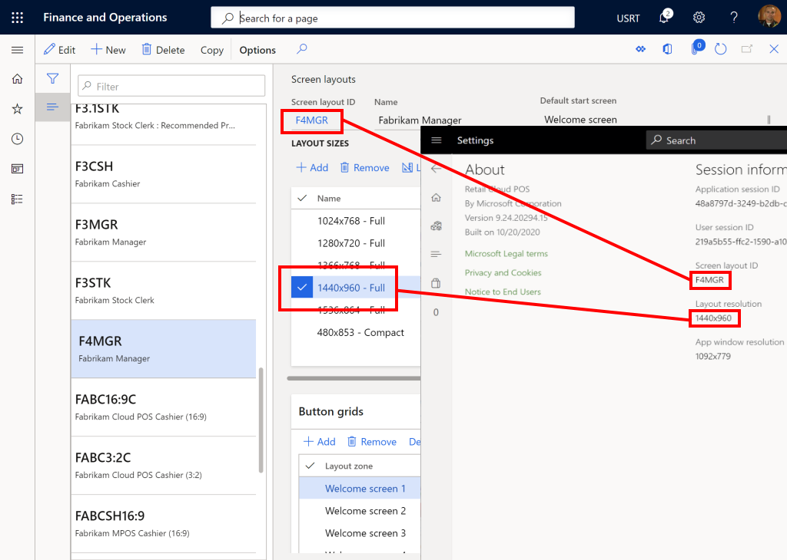
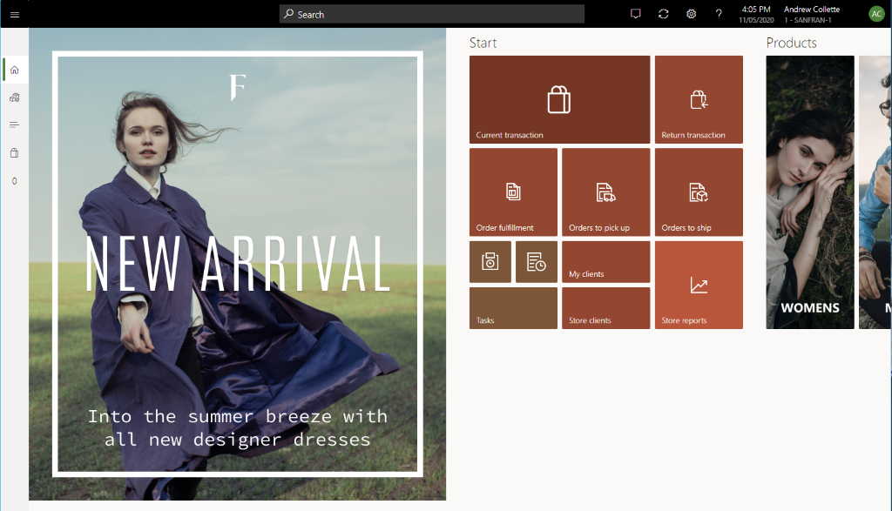
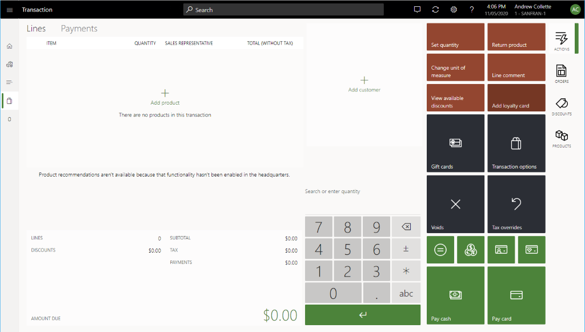
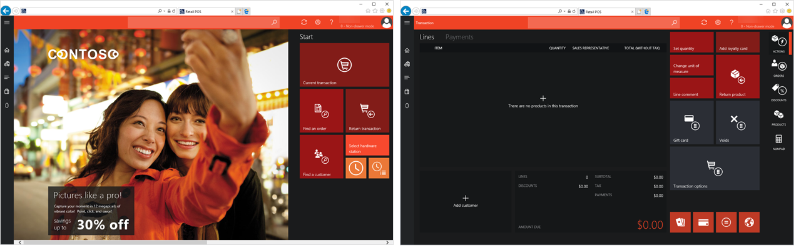

Bildschirmlayouts für Demodaten in Modern POS (MPOS) und Cloud POS
Important
Dynamics 365 Retail ist jetzt Dynamics 365 Commerce und bietet umfassende Handelsfunktionen für alle Kanäle – von E-Commerce über Shops bis hin zu Callcentern. Weitere Informationen zu diesen Änderungen finden Sie unter Microsoft Dynamics 365 Commerce.
Dieses Thema enthält Informationen zu den Bildschirmlayouts, die in den Demodaten einbezogen sind, die für die Verkaufsstelle (POS)-Erfahrungen in Dynamics 365 Commerce festgelegt werden.
Übersicht
Die Beispielbildschirmlayouts, die mit Commerce-Demodaten einbezogen werden, enthalten Inhalt, der für verschiedene Retail-Segmente, Shoparbeitskraftrollen und Geräte optimiert ist. Ein einzelnes Layout kann mehrere Layoutgrößen und Schaltflächenrastern oder Kombinationen von enthalten, um sicherzustellen, dass Shoparbeitskräfte zwischen Stationen und Geräten wechseln. In diesem Thema werden die Unterschiede zwischen diesen Layouts, den Arbeitsgängen, die sie bieten, und den Gesamterfahrungen hervorgehoben, die sie beinhalten.

Struktur einer Bildschirmlayout-ID
Um Bildschirmlayouts in Retail zu suchen, gehen Sie zu Retail und Commerce > Kanaleinstellung >POS-Einstellung >POS>Bildschirmdarstellung.
Bildschirmlayout-IDs können maximal 10 Zeichen haben. Die Kennung ist eine Zeichenfolge, die aus drei Informationen besteht, in dieser Reihenfolge:
- Unternehmen
- Layoutversion
- Person
Unternehmen
| Buchstabe | Unternehmen |
|---|---|
| H | Adventure Works |
| F | Fabrikam |
| k | Contoso |
Layoutversion
| Versionsnummer | Beschreibung |
|---|---|
| 3 | Die Basisversion, die mehrere Bildschirmgrößen für verschiedene Geräte und Seitenverhältnisse unterstützt |
| 3.1 | Die Basisversion, die zusätzlichen Support für den Bereich Empfohlene Produkte hat |
| 4 | Die erweiterte Version für das erweiterte für Fabrikam aktualisierte Layout |
Person
| Abkürzung | Person | Inhalt |
|---|---|---|
| CSH | Kassierer | Kassiererlayouts enthalten alle buchungsrelevanten Arbeitsgänge, wie Debitorenaufträge, Rücklieferungen, Rabatte Lücken, Geschenkkarten. Diese Layouts enthalten außerdem tägliche Aufgaben für die Ausführung von Lagerverwaltung, Preisüberprüfungen, Bestandssuchen und Bestandszählungen. Grundlegende Schichtverwaltung wird auch für Anfangsbeträge, Aussetzen von Schichten und Vorgänge und Stempeluhr bereitgestellt. |
| MGR | Shopleiter | Shopleiterlayouts enthalten alle buchungsrelevanten Arbeitsgänge, die in den Kassiererlayouts gefunden werden, auch Steueraußerkraftsetzungen wird bereitgestellt. Diese Layouts enthalten außerdem tägliche Aufgaben für die Ausführung von Lagerverwaltung, Preisüberprüfungen, Bestandssuchen und Bestandszählungen. Schichtverwaltung wird für das Starten, das Unterbrechen und Abschließen von Arbeitsschichten bereitgestellt. Darüber hinaus enthalten die Kassenladearbeitsgänge Layouts für Einträge, Entfernen, Kassenstürze und Safe- und Bankeinzahlungen. Schließlich enthalten diese Layouts den Zugriff auf die Performance-Berichte und aktivieren der zu druckenden X und Z-Berichte. |
| STK | Lagerangestellter | Lagerverwalterlayouts sind für Lagerverwaltung optimiert. Sie enthalten Zugriff auf die Tagewerke für Preisüberprüfungen, Bestandssuchen, Entnahme und Empfang Bestandszählungen, und Kit-Disassembly. Diese Layouts enthalten auch grundlegende Schichtvorgänge für Stempeluhr und Unterbrechen von Schichten. Diese Layouts sind für Backofficeaufgaben vorgesehen, Lagerangestellte besitzen die gleichen wie Arbeitsgänge für Kassierer Buchungsbildschirme. |
Beispielslayout
Das folgende Beispiel einer Bildschirmlayout-Kennung und Verlustrechnung für die Layoutversion, 4 und die Shopleiterperson:
F4MGR
In der folgenden Abbildung wird ein Beispiel des Begrüßungsbildschirms für einen Fabrikam-Shopleiter angezeigt.

Layoutgrößen
Volle vs. kompakte Layouts
Ein Bildschirmlayout kann die Konfigurationen von Komplett- und Kompaktgeräten angeben. Diese Konfiguration ermöglicht ein einzelnes Bildschirmlayout zu einem Benutzer zuzuordnen, der mit verschiedene Größen und Formularfaktoren im Shop arbeitet.
- Modern POS - Vollständig - Vollständige Layouts werden verwendet für große PC-Bildschirme oder Tablets. Benutzer können die Benutzeroberflächenelemente auswählen, die das Layout umfasst, angeben der Größe und der Position dieser Elemente und konfigurieren ihrer detaillierte Eigenschaften. Vollständige Layouts unterstützen Hochformat- und Querformatkonfigurationen.
- Modern POS - Kompakt - Kompakte Layouts werden verwendet für kleine Telefone oder Tablets. Designmöglichkeiten werden für kompakte Geräte beschränkt. Benutzer können die Spalten und Felder für den Zugriff und summenbereiche konfigurieren.
Bildschirmauflösungen, die bereitgestellt werden
In der folgenden Tabelle werden die Layoutgrößen angezeigt, die aus für typische bereitgestellt werden.
| Layouttyp | Auflösung | Ansichtverhältnis | Zielanzeige |
|---|---|---|---|
| Kompaktieren* | 480 × 853 | 16:9 | Telefone |
| Voll | 1024 × 768 | 4:3 | Tablets |
| Voll* | 1280 × 720 | 16:9 | Tablets |
| Voll | 1366 × 768 | 16:9 | Tablets, größere Bildschirme |
| Vollständig | 1440 × 960 | 3:2 | Tablets, größere Bildschirme |
| Vollständig* | 1536 × 864 | 16:9 | Tablets, größere Bildschirme |
* Diese zusätzliche Layoutgrößen sind nur in Adventure Works- und Fabrikam-Layouts verfügbar.
Tip
POS wählt automatisch Layoutgrößen, basierend auf der nächsten Größe, für die die Bildschirmauflösung des aktuellen App-Fensters verfügbar ist. Um die Bildschirmlayout-ID- und -Layoutlösung, die derzeit verwendet werden, in Modern POS (MPOS) oder Retail Cloud POS (CPOS) zu finden, öffnen Sie die Seite Einstellungen im Abschnitt Sitzungsinformationen. Sie können die aktuelle Fensterauflösung für die aktuelle Anwendung oder Browserrahmen finden. Nachdem Sie diese Informationen erhalten haben, können Sie die Quelle des Layoutinhalts finden, indem Sie zu Kanaleinstellung > POS-Einstellung > POS > Bildschirmlayouts gehen.

Unternehmen und Marken
Jedes fiktive Unternehmen zielt auf eine andere Retail-Zielgruppe und enthält Produktkataloge, die für den Betrieb des Unternehmens optimiert werden. Jedes Unternehmen verfügt über eine eindeutige Sichtmarke, die den Produkte beigelegt werden soll. Brandingelemente enthalten die Akzentfarbe, das dunkle oder helle Thema und begleitende Fotografien, die realistische Erfahrungen enthalten.
Unternehmenssegment und Sichtmerkmale
| Unternehmen | Ziel | Segment | Akzent | Thema |
|---|---|---|---|---|
| Adventure Works | Seattle | Sport-Waren | Blau | Dunkel |
| Fabrikam | San Francisco | Mode | Green | Hell |
| Contoso | Boston | Elektrogeräte | Red | Dunkel |
Note
Adventure Works und Fabrikam sind die beiden Flaggschiffmarken. Contoso ist verfügbar, aber nicht alle Layouts sind bereitgestellt worden.
Die folgenden Abbildungen zeigen Beispiele der Willkommensseite und Buchungsseite für die drei erfundenen Unternehmen.
Adventure Works


Fabrikam


Contoso

Benutzeranmeldung in Matrix
Benutzer wurden für die verschiedenen Bildschirmlayouts bereitgestellt. Mit der folgenden Tabelle sollte es möglich sein, auf jeden Bildschirm zuzugreifen. Melden Sie einfach an, indem Sie eine entsprechende Operator-ID verwenden.
| Unternehmen | Bildschirmlayoutkennung | Person | Bedienerkennungen |
|---|---|---|---|
| Adventure Works | A3MGR | Shopleiter | 000154, 000137, 000073 |
| Adventure Works | A3CSH | Kassierer | 000150, 000175, 000165 |
| Adventure Works | A3STK | Lagerangestellter | 000155, 000181, 000152 |
| Fabrikam | F4MGR | Shopleiter | 000160, 000713 |
| Fabrikam | F3CSH | Kassierer | 000161, 000113, 000114 |
| Fabrikam | F3STK | Lagerangestellter | 000164, 000112, 000123 |
| Contoso | C3MGR | Shopleiter | 000100, 000111 |
| Contoso | C3CSH | Kassierer | 000110, 000120 |
| Contoso | Nicht zutreffend | Lagerangestellter | Nicht zutreffend |
Tip
Für beste Ergebnisse aktivieren Sie ein Register im entsprechenden Filialstandort, und legen Sie das Unternehmen auf das Unternehmen der Persona fest, die Sie planen, zu verwenden ist, wenn Sie sich anmelden. Auf diese Weise können Sie sicherzustellen, dass Bilder des visuellen Profils und des Brandings über die Erfahrung hinweg angepasst werden. Wenn Sie z. B. interessiert sind,ein Fabrikam-Layout für einen Kassierer zu finden, sollten Sie ein Register im Houston-Shop aktivieren.